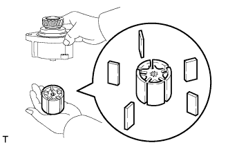
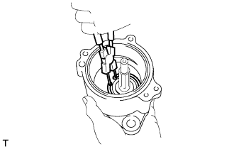

ВАКУУМНЫЙ НАСОС (для моделей с 1KD-FTV) > РАЗБОРКА |
| 1. СНИМИТЕ ОБРАТНЫЙ КЛАПАН В СБОРЕ |
Зажмите насос в тисках.
Выверните болт-штуцер и снимите штуцер и 2 прокладки.
Снимите обратный клапан и прокладку.
| 2. СНИМИТЕ ТОРЦЕВУЮ КРЫШКУ ВАКУУМНОГО НАСОСА |
Выверните 3 болта.
Выбейте 2 стопорных штифта с помощью молотка и бородка с тонким цилиндрическим концом 5 мм.
Снимите торцевую крышку и 2 кольцевых уплотнения.
| 3. СНИМИТЕ РОТОР ВАКУУМНОГО НАСОСА В СБОРЕ |
|  |
Снимите ротор вместе с 5 лопастями.
| 4. СНИМИТЕ ЛОПАСТЬ ВАКУУМНОГО НАСОСА |
Снимите 5 лопастей с ротора.
| 5. СНИМИТЕ ШЕСТЕРНЮ ВАКУУМНОГО НАСОСА |
Зажмите шестерню в тисках.
Отверните контргайку шестерни.
Снимите шестерню и сегментную шпонку.
| 6. СНИМИТЕ ВАЛ ВАКУУМНОГО НАСОСА |
|  |
С помощью съемника стопорных колец снимите пружинное стопорное кольцо.
С помощью молотка с пластмассовым покрытием выбейте вал.
| 7. СНИМИТЕ ПОДШИПНИК ВАКУУМНОГО НАСОСА |
Используя торцевой ключ с головкой на 17 мм и пресс, выпрессуйте подшипник.